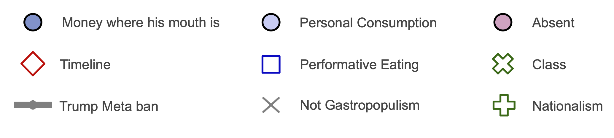
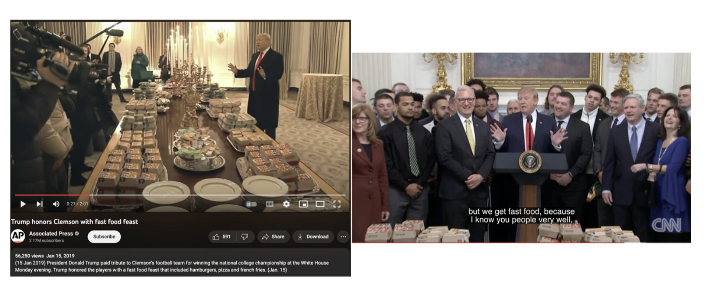
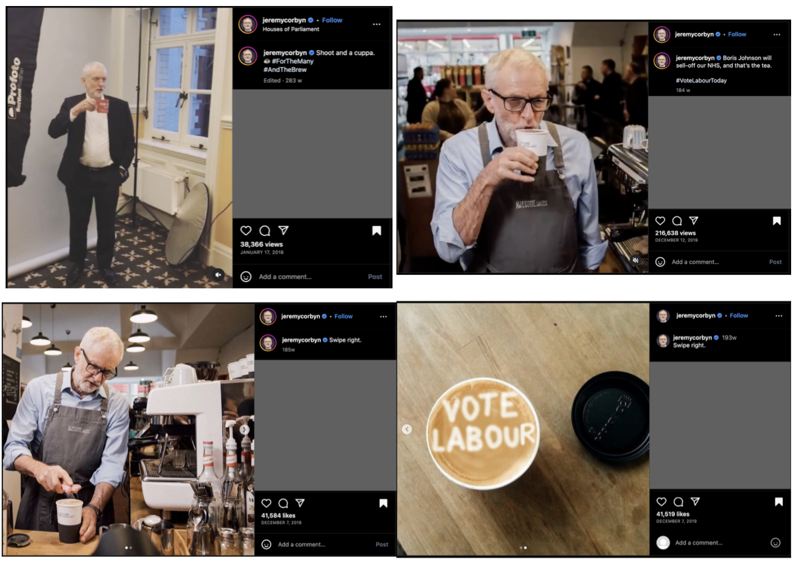

5 Individual Timelines Thematic Analysis
5.1 Introduction
In Demuru’s (2021, p508) introduction, he postulates that when “casually browsing” Trump’s social media, food “might eventually be present” but “does not play such an important role as for Salvini and Bolsanaro”. Yet, when quantitatively coded and visualised in Figure 5.1 below, we can see a clear trend of Trump using gastropopulism almost exclusively during campaigns. Therefore, generating individual timelines from the dataset can reveal unanticipated insights about how actors use gastropopulism. Pairing these visualisations with deeper qualitative inductive thematic analysis helps us understand actors’ habits and motivations for gastropopulist performances.
5.2 Trump
Figure 5.1: Trump Gastropopulism Timeline
Trump timeline legend

This analysis considers how Trump uses gastropopulist performances to ‘put his money where his mouth is’ by personally buying food for his people, through examination of a paradigm campaign example [V7, 22/02/23] and the two outlying non-campaign gastropopulist performances [V6, 15/01/2019; V45, 04/03/2019]. Figure 5.1 also shows that Trump’s gastropopulist performances are frequently disseminated by others, and he gave only five performances during his 2020 campaign. I return to these observations in §6.2: Class, considering how and why others construct Trump’s public identity as gastropopulist.
Figure 5.2: Trump in an Ohio McDonalds [V7, 22/02/23]

V7 [22/02/2023] shows Trump in a McDonalds in East Palestine, Ohio, shortly after a train carrying hazardous chemicals derailed in the area (Colvin and Seewer, 2023). Trump was in campaign-mode, wearing his trademark “Make America Great Again” red cap and handing some out to the audience (Colvin and Seewer, 2023). After greeting the staff, Trump says, “I know this menu better than you do. I probably know it better than anyone in here.”. Here, he positions himself as belonging to the people, yet still elevated as an authority. These light-hearted claims reflect his deeper disregard for the expertise of others, which is typical of populist bad manners (Moffitt, 2016, p44).
In V7, Trump says to the cashier, “We’re gonna take care of the fire department. We’re gonna take care of the police department. […] Plus, the people that are in here, they’re gonna get a nice, free meal.”. He positions himself as a caretaker to demonstrate his belonging with the people. This is a representative example of how Trump has frequently ‘put his money where his mouth is’ by personally paying for fast food feasts for his people. This enables Trump to perform both his commitment to using his resources to benefit the people, and the working class affinity of his personal tastes. Buying food is a particularly efficient way to achieve this as it is a relatively low-cost and low-effort endeavour for Trump, yet establishes a connection between Trump and his audience that feels tangible, personal, and embodied. This simulates commensality despite Trump rarely eating at such events. ‘Putting his money where his mouth is’ is highly suited to the campaign trail, as there will always be a glut of available restaurants and people wanting a free meal. Moreover, it proved successful in Trump’s two outlying non-campaign gastropopulist performances.
Figure 5.3: Trump, Football, and Fast Food [V6, 15/01/2019; V45, 04/03/2019]

In V6 [15/01/2019] and V45 [04/03/2019], Trump follows custom by inviting championship-winning football teams, the Clemson Tigers and the Bison, respectively, to catered White House receptions (Oprysko, 2019). Deviating from custom, these events were catered by, in Trump’s words, “All-American companies, Burger King, Wendy’s, McDonalds” [V6; V45].
V6 occurred during a government shutdown, which furloughed White House kitchen staff (Oprysko, 2019). Trump says his options were no food, salads made by the First and Second Ladies, or “I send out for about 1,000 hamburgers”, paid for with his own money. He says, “We have everything that I like, that you like”. This gastropopulist performance was so successful that two months later, he repeated it for the Bisons, reported by Politico as “turning his well-known fast food affinity into a White House tradition” (Oprysko, 2019). In V45, Trump states, “We had the Clemson Tigers here and we did the same thing. We could have had chefs, but we got fast food, because I know you people very well.”. As such, while Trump generally limits his gastropopulist performances to campaign periods, he will use gastropopulism if it has particular affordances for his needs. This shows how Trump strategically puts his money where his mouth is in gastropopulist performances to demonstrate his belonging with the people, disregard for formality, and spontaneity.
5.3 AOC
Figure 5.4: AOC Gastropopulism Timeline
AOC timeline legend
For AOC, the primary analytical relevance is where, not when, gastropopulism is performed. Given AOC’s massive audience relative to her district, she must balance her borderless representative claims and her direct representative responsibilities. AOC achieves this through primarily setting her gastropopulist content in her represented district [n=16], or her (implied) home [n=7]. This serves two crucial purposes: it performs intimacy with her constituents; and it emphasises the politician element of her celebrity politician role. This is intended to legitimise her performed authenticity as a dedicated local representative who will not be corrupted by power, fame, or money. Gastropopulism is particularly effective for this purpose as it facilitates the generation of politainment that is at once universal and geographically connected.
Figure 5.5: AOC in the Bronx with Desus and Mero V55 [07/02/2020]
As a New York native and representative, AOC has endless local opportunities for interesting and strategic influencer-style gastropopulist performances. V55 [07/02/2020] is a video interview with ‘Desus & Mero’ (a late-night talkshow), the second-most watched on their YouTube channel with 2.15 million views (Desus & Mero, 2020). Where the interview takes place is up to the guest, with many using a Bronx bar or talk-show set. AOC chooses to locate her interview through several Bronx food-settings, pictured above: a bodega to get a BEC (bacon-egg-cheese bagel); eating and walking around the neighbourhood; a bar where she makes cocktails; a taqueria to get burritos.
The video is a carefully arranged gastropopulist performance that cohesively utilises several of AOC’s roles. In the bodega (V55a, top left), AOC states that it is “impossible” to get a good BEC in DC, due to the lack of bodegas. She claims, “I don’t know how anybody eats in Washington DC. Which probably explains why everyone’s fighting all the time!”. Eating the BEC as they walk around the neighbourhood, multiple citizens greet and compliment AOC. V55b, top right, depicts when a citizen gets out of a car and runs towards AOC, they embrace twice as the citizen says, “I love you! Wow you are powerful. I love you so much, girl. You are a light, keep shining.”, and AOC — still holding her foil-wrapped BEC — says “Thank you! You too.”. They blow kisses at each other as they end their conversation. V55c, bottom left, shows AOC making cocktails at a bar they “luckily” walked past. V55d, bottom right, shows the group with burritos at a taqueria.
In this video, AOC flexes her self-presentation skills, masterfully integrating and blurring her different roles to cohesively: distance herself from the DC political elite; demonstrate her natural belonging to and immense popularity with the people she represents; embody her service worker history; show her enthusiastic taste for cheap, popular NY and Latin American foods. Throughout the video, she treats her interlocutors (interviewers, citizens, service staff) equally as good friends, with expressive and informal language, hugs, blowing kisses, shouting across the street, laughing and joking. The interlocutors serve to corroborate her performance (Rüdiger, 2021, p23). Her performed authenticity is fluent and appears effortless, but this nevertheless is a highly structured and edited video. This politainment content is a perfect representation of how the affordances of her ‘everyday influencer’ celebrity role enable the strategic integration of her political, personal, and professional roles and bolster the performed authenticity of her public identity. Furthermore, it specifically locates her as belonging to her district the Bronx, through her own preference and that of the citizens she represents, who shower her with parasocial love and reciprocated physical affection.
5.4 Corbyn
Figure 5.6: Corbyn Gastropopulism Timeline
Corbyn timeline legend
Corbyn’s timeline shows a hesitant adoption of gastropopulism. His first foray, P2 in 2015, is explored in §7: Performative Eating. His three gastropopulist posts in 2016 were in the run-up to the EU referendum. Of his seven such posts in 2017, three occurred in the month leading to the General Election (GE). 2018 was seemingly a fallow year, totalling only three relevant items. However, in 2019, with the UK’s final EU Parliament Elections and a snap GE, Corbyn issued 23 gastropopulist performances, six of which in the week before the GE. This enthusiasm quickly dissipated, with only seven such posts in 2020, one in 2021, and none from 2022 until my data collection concluded in June 2023. This section is a comparative analysis of how Corbyn used tea in his gastropopulism outwith [V27] and within [V28; P26] campaigns. This finishes by considering how Corbyn’s performances were motivated by his leadership role, the loss of which leading to his withdrawal from gastropopulism.
Figure 5.7: Corbyn and Tea [V27, 17/01/2018; V28, 12/12/19; P26a/P26b, 07/12/2019]

V27 [17/01/2018] is a quick-looping gif of Corbyn pretending to sip from a Labour-red ‘For The Many’ campaign merchandise mug as a camera light flashes, geotagged at the Houses of Parliament. In the caption, Corbyn uses light-hearted wordplay to integrate tea into his Labour slogan: “#ForTheMany/#AndTheBrew”. This post blends the front- and back-stages by performing a ‘behind-the-scenes’ display of Corbyn’s photoshoot, with Corbyn’s body positioned towards the ‘Instagram’ camera as his face/gaze is directed elsewhere, likely the official photographer. Tea is an extremely popular food-product assimilated into UK culture. ‘Cuppa’ and ‘brew’ are informal names for tea, and the sturdy mug (opposed to a fine china teacup) position this as low-brow, ordinary British tea culture.
Here, Corbyn is using everyday British gastronomy to casually position himself and his politics as belonging with and sharing the tastes of ‘the many’ (the people). The light-hearted integration of tea into his political slogan and his body is a form of mimetic identification that both softens and performs authenticity for his constructed public identity, without making any concrete political claims or attempts to mobilise the audience. This seems to naturally set the stage for using the slogan in politicised and mobilising campaign-oriented gastropopulism. However, as shown in Figure 5.6, five of the nine uses of the campaign slogan in Corbyn’s gastropopulist performances were clustered in the six months following the 2017 GE, and it was used only three times during the 2019 campaigns.
During the 2019 GE campaign, Corbyn invoked the food-mode in explicitly political messages aiming to mobilise. V28, posted on election day, is another gif of Corbyn sipping tea. Though the ‘for the many’ slogan is not invoked through the linguistic mode, it is embodied through his performance as of a service worker. Corbyn claims that “Boris Johnson will sell-off our NHS, and that’s the tea. #VoteLabourToday”. In addition to the aforementioned role of tea in British culture, “the T/tea” (meaning ‘truth’) is slang originating from the Queer Black American community (merriam-webster.com, 2023), adding a further semiotic layer that performs Corbyn’s informality and proximity to youth/popular culture. Despite performing urgency through the linguistic mode (the need to vote “Today” due to threat Johnson poses to “our” NHS), he appears relaxed in his body-mode (casual sipping) and food-mode (gossip-y use of “the tea”), lacking expressive coherence (Goffman, 1959, p38).
Interestingly, P26a and P26b [07/12/2019] are more content from this event, composed of two pictures with the caption “Swipe right.”. The pictures first show Corbyn sprinkling sugar onto a coffee [P26a], then a coffee with a “Vote Labour” message on the foam [P26b]. Thus, it is probable that Corbyn is actually drinking coffee, not tea, in V28. However, presenting the drink as tea in V28 facilitates the construction of a cohesive identity that plays upon everyday British culture and contemporary slang. In both posts, the food mode is used to mobilise the audience to vote Labour. However, in line with my performance-based theory of gastropopulism, the food-mode is used as a prop rather than a tangible manifestation of ideology or political discourse.
Figure 5.6 also shows Corbyn’s withdrawal from gastropopulist performances. Between being ousted as leader [04/04/2020] and ousted from the parliamentary party [29/10/2020], he made only five gastropopulist posts, and only one thereafter. This aspect supports my theory’s focus on the actor’s celebrity politician role. Recall my assertion that for Corbyn, this role was abruptly given to him with his leader role and motivated his gastropopulist performances. As such, it makes sense that the loss of these roles temporally aligns with his move away from gastropopulism and return to his firm separation of his personal role from his public identity.
5.5 Farage
Figure 5.8: Farage Gastropopulism Timeline
Farage timeline legend
Figure 5.9: Farage with wine bottles [P78, 10/06/2017; P79, 27/11/2019]
Farage frequently uses food and alcohol to represent the causes and solutions of political problems [n=27 and implied n=16]. This simulates commensality (eating/drinking together) as Farage performs sharing political struggles such as Brexit with his people (Hai-Jew, 2022, p270). Here, I examine Farage’s use of carefully curated wine brands.
P78 [10/06/2017] and P79 [27/11/2019] utilise wine brands to allude to other political actors and their politics — Trump and Corbyn, respectively. In P78, a poorly-lit grinning Farage claims to be battling “Brexit blues with a bottle of Trump”, holding the miniature bottle and a small glass of red wine towards the camera. It is relevant to note that Farage stepped down as UKIP leader shortly after the EU referendum, but remained a party MEP (Thomas, 2016). P78 was posted two days following the 2017 GE, wherein UKIP faced a dramatic blow to its political relevance, with a -10.8% swing and loss of its only seat (Swinford, 2017). However, this post frames the outcome as neither a personal nor party loss but a blow to Brexit itself. This gastropopulist performance invokes food semiotics through utilising the wine bottle to present the solution to affective political issues (“Brexit blues”) as drinking alcohol (mimetic identification with British binge-drinking culture) and the embodiment of Donald Trump’s politics (substance and style). Despite Farage’s ‘Brexit blues’, he remains smiling, safe in the knowledge that a “bottle of Trump” (signifying alcohol, signifying Donald Trump) will see him through.
In P79, Farage slightly smirks as he holds a ‘Corbin’ wine bottle to the camera, describing it as a “Disappointing choice. Past its best, now leaves a bitter taste.”. P79 was posted two weeks before the 2019 GE, and is transparently a negative campaign message against Corbyn. Representing Corbyn via a wine bottle introduces the lexical field of wine tasting notes (aged “past its best”, overly tannic/“bitter taste”) and implies that whether on the menu or the ballot, Corb[i/y]n is a “disappointing choice”. Another interesting aspect of the wine lexical field is the idea of ‘Old World’ (Europe) and ‘New World’ (of relevance herein, the US). Old World winemaking abides by strict rules and regulations rooted in tradition, such as appellation, which is a legally defined and protected geographic indication, e.g., Champagne (Hoss, n.d.). New World winemaking lacks many of the Old World’s traditions and restrictions, and as a result, is historically seen as less refined (Hoss, n.d.). As well as the alignment with high/low culture, this adds a further semiotic layer regarding the legal regulations of the Old and New Worlds that are analogous to Farage’s claims regarding the EU and US.
These posts illustrate Bourdieu’s (1984, p99) assertion that the dual meaning of the word ‘taste’ — as value judgement and as gustatory perception — is inseparable. The less-scrutinised food-mode is used here as a material representation of political identities that emphatically locates Farage’s constructed identity with the far-right Trump, the US, the low-brow, and fewer regulations, and away from the far-left Corbyn, Europe, the high-brow, and ‘bureaucracy’. The use of wine brands provides a veil between Farage’s posts and their implied actors, presenting the posts as capturing Farage’s fun and spontaneous interactions with everyday objects rather than purposeful political positioning.
This provides an insight as to how Farage takes advantage of food/drink to communicate the cause/solution of political problems. Notably, he represents other political actors’ identities through alcohol as a less-scrutinised communicative mode to construct and legitimise his own gastropopulist identity. Farage is particularly savvy at integrating food semiotics with performances of affect (emotion), paying heed to the social role of food, especially for celebration and comfort. Since leaving the Brexit/Reform Party in March 2021, Farage has also reduced his gastropopulist performances (Walker, 2021).
5.6 Discussion
This individual timeline thematic analysis demonstrates how each actor tailors gastropopulism to their needs, by considering the underlying habits, motivations, and consistency of their multimodal gastropopulist performances and constructed public identities. This chapter has brought the statistical analysis to life by centring multimodality in the data and analysis. Visualising each actor’s gastropopulism timeline and exploring representative examples of individual themes echoes García-Santamaría’s (2020, p146) position that political actors’ food posts are “never about just food”. Moreover, this structure offers the potential to generate insightful patterns in the data that are effectively imperceptible when casually browsing. In particular, this has illuminated how Trump strategically aligns his performances with campaigns, and the slow rise and fast fall of Corbyn’s gastropopulism. We have started to investigate the consistency of AOC and Farage’s carefully constructed gastropopulist identities. The inherent individuality and subtlety of gastropopulist performances necessitates analysis that centres the data, rather than the author’s perceptions/assumptions.
Looking beyond this dissertation, the chapter’s mixed-methods design offers a significant contribution to gastropopulism research, through providing a data-driven methodological and analytical framework that is flexible to different ideological and regional contexts. This would improve the transparency, replicability, and generalisability of future empirical gastropopulism research (Peels, 2019, p4). In the next chapter, deductive qualitative thematic analysis is used to examine how the central themes of gastropopulism literature — nationalism and class — manifest within my dataset and theory. This explores how actors attempt to foster perceived credibility of their public identities through gastropopulist performances.